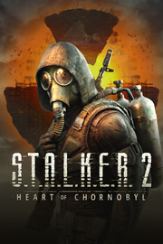

S.T.A.L.K.E.R. 2: Heart of Chornobyl
Detalles
|  | |
| Tiempo de juego | No Jugado |
| Última actividad | Nunca |
| Añadido | 11/24/2024 22:59:54 |
| Modificado | 11/24/2024 23:45:11 |
| Estado de finalización | Not Played |
| Librería | Playnite |
| Fuente | 2TB DATOS |
| Plataforma | PC (Windows) |
| Fecha de lanzamiento | 11/20/2024 |
| Puntuación de la Comunidad | 76 |
| Puntuación de la Crítica | |
| Puntuación de usuario | |
| Género | Acción Aventura Rol |
| Desarrollador | GSC Game World |
| Editor | 4divinity (China and South East Asia) GSC Game World (worldwide) SEGA (Japan) |
| Característica | Cloud Saves Compat. Parcial Con Mando Cromos De HDR Disponible Logros De Préstamo Familiar Un Jugador |
| Enlaces | Punto de encuentro Discusiones Guías Noticias Página de la tienda PCGamingWiki Logros |
| Tag | Acción Ambientales Buena trama Ciencia ficción Cinematográficos Disparos Exploración Finales múltiples FPS Las elecciones importan Mitos y leyendas Mundo abierto No lineales Posapocalípticos Primera persona Realistas Rol Simulador inmersivo Supervivencia Un jugador |
Descripción
Descubre el legendario universo de S.T.A.L.K.E.R. y su experiencia:
Jugabilidad única que combina FPS, terror y simulador inmersivo
Historia no lineal con diversas rutas que conducen a sus múltiples finales
Gráficos punteros desarrollados con lo último en tecnología fotogramétrica y de escaneado
Sistemas de IA avanzados que mantendrán en vilo incluso a los jugadores más avanzados
Mecánicas de supervivencia inmersivas incluyendo efectos como hambre, sueño, hemorragia y radiación para enriquecer la jugabilidad
Ciclo dinámico de día y noche y meteorológico que da aún más realismo a la experiencia de jugabilidad
Compatibilidad con mods para dar a los jugadores más creativos la libertad de ampliar y enriquecer el universo del juego
El modo multijugador se añadirá después del lanzamiento como una actualización gratuita

La Zona de Exclusión de Chornóbil cambió radicalmente tras la segunda explosión en 2006. Los mutantes violentos, las anomalías letales y las facciones enfrentadas hacen de la Zona un lugar en el que sobrevivir es todo un reto. Sin embargo, los valiosísimos artefactos atraen a gente de todo el mundo. Apodados Stalkers, se adentran en la zona por su cuenta y riesgo en busca de fortuna o posiblemente de la verdad que esconde el Corazón de Chornóbil.
FASCINANTE HISTORIA NO LINEAL EN UN MUNDO ABIERTO FLUIDO
En el papel de un Stalker solitario, explora lugares de realismo fotográfico en un mundo abierto sin zonas de carga con una superficie de 64 km² que incluye diversos entornos que reflejan distintos aspectos postapocalípticos. Ábrete paso por la Zona, encuentra tu destino y decide el futuro que le espera a la humanidad en una historia épica con muchas opciones.

NUMEROSOS ENEMIGOS Y CIENTOS DE COMBINACIONES DE ARMAS
Conocerás a miembros de diversas facciones y deberás decidir quiénes merecen tu amistad y quiénes una buena dosis de plomo. Participa en intensos tiroteos contra enemigos que usarán diferentes tácticas para intentar acabar contigo. Elige tu arsenal de entre más de 30 tipos de armas con numerosas modificaciones que te permitirán crear cientos de combinaciones letales.

MUTANTES LEGENDARIOS CON COMPORTAMIENTOS DISTINTOS
Prepárate para hacer frente a terribles criaturas mutantes que intentarán matarte. Cada una se comporta de forma distinta. Cada mutante puede tener diversos subtipos, por lo que su comportamiento es menos predecible. Las regiones con numerosos mutantes cazando en grandes grupos son extremadamente peligrosas.

ARTEFACTOS VALIOSÍSIMOS Y ANOMALÍAS INMISERICORDES
Los artefactos más valiosos de la Zona y sus mayores secretos están en las regiones más peligrosas. Ten cuidado con las letales anomalías y las devastadoras archianomalías mientras buscas los preciados artefactos de la Zona ¿Te atreverás a descubrir los misterios de la Zona, que se han cobrado las vidas de muchos de tus predecesores?

¡BUENA CAZA, STALKER!